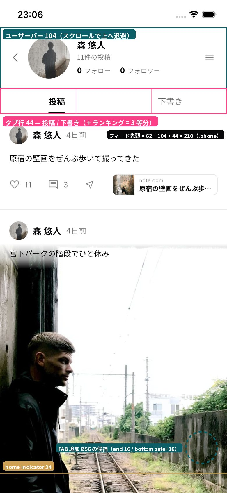
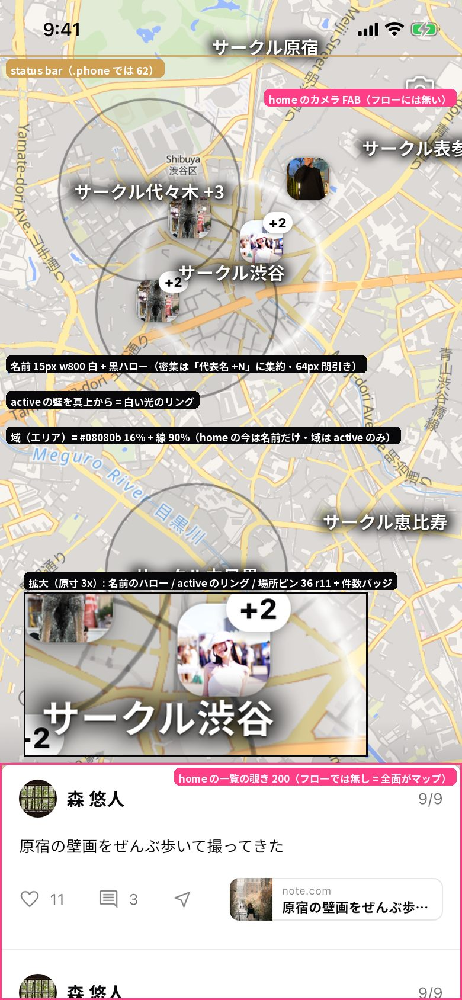
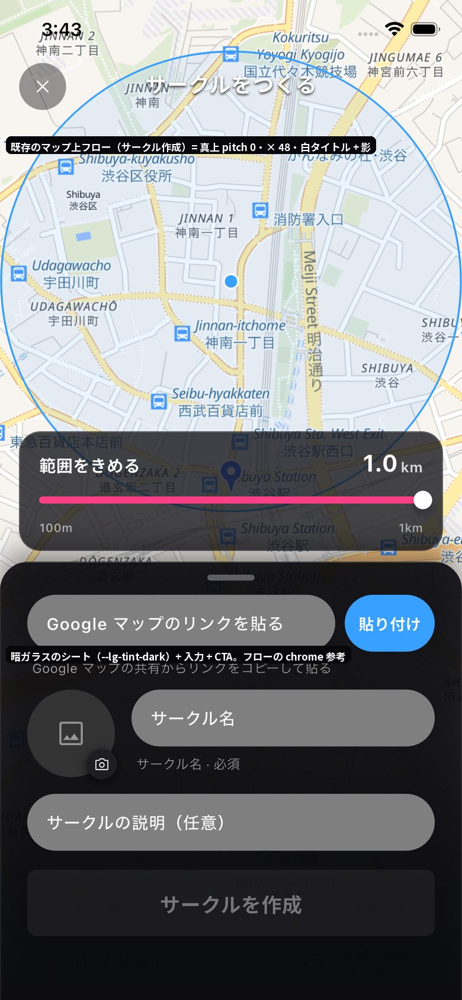

投稿にリンクした場所（店）を、自由なタイトルで順位付けして自分のプロフィールに並べる。
見る場所 = 投稿 / 下書き の隣の「ランキング」タブ。作る入口 = タブ画面の右下の追加 FAB →
home と同じ地図を全面に敷いたフローへ遷移し、真上から見下ろすマップでサークル名とエリアを見ながら最初にサークルを選ぶ。
仕様の正は HANDOFF.md（固定値・データ・探索軸の全文はそちら）。
実機（iPhone 17e・mock）のショットを 2x に落とし、設計を縛る帯・タップ域・chrome を描き込んだ。数値は .phone（402×874・status bar 62）換算。

ユーザーバー 104（スクロールで退避）→ タブ行 44（バーと上がり status bar 直下で止まる）→ フィード先頭 210。 タブは等分（3 タブ = 各 134）。ラベル 14 / 選択 w700 + 下線 2 / 非選択 w500 ink-sub。 右下の破線 = 追加 FAB の既定候補（end 16 / bottom 34+16 / Ø56）。設計対象はタブの中身と FAB だけ。

名前 = 15px w800 白 + 黒ハロー（密集は「代表名 +N」に集約・64px 間引き）。active の壁は真上では白い光のリング。
エリアの円は #08080b 16% 塗り + 線 90%（home の今は名前だけだが、フローでは全サークルの円を描く）。
場所ピン 36 / r11 の写真タイル + 件数バッジ。下の一覧の覗き 200 はフローには無い（地図が全面）。

サークル作成 = 真上 pitch 0 の地図に 暗い chrome: 左上 × 40（黒 40% 円 + 白 18）/ 中央タイトル 18 w700 白 + 影 /
浮きパネル rgba(21,21,26,.8) r18 縁白 14% / 下端シート rgba(10,10,14,.9) 上角 r24 / CTA 56 r8。
フローの chrome はこの流儀（--lg-tint-dark）に揃える。
黒 = 固定（変えない）。ピンク = 探索（併合・順序変更・地図の使い方は自由）。
プロフィール（ライト面）の 3 つ目のタブ。FAB タップで画面遷移。他人のプロフィールには FAB を出さない
地図が全面・pitch 0・pan / ピンチ可。サークル名とエリアの円を全部描く。タップで選択。フロー専用の地図（終了で捨てる）
既定の想定: 同じ地図に場所ピン + 一覧。自分が投稿した場所を先頭に。投稿していない店をリンク貼り付けで足せるかは提案
既定の想定: ドラッグで並べ替え。選ぶと同時に順位が決まる形に併合してもよい
自由入力（最初に聞いてもよい）。保存でタブへ戻り、新しいランキングが先頭に出る
破ると実装に載らない。値は Flutter 実装から捕捉済み。
| 項目 | 値 |
|---|---|
| 端末枠 | .phone 402×874 / status bar 62 / home indicator 34 / タップ ≥ 44pt |
| プロフィール（A）の面 | 白 #fff / ink #08080b / ink-sub rgba(8,8,11,.56) / hairline rgba(8,8,11,.08) / リンク teal #0d5f67 |
| タブ行 | 高さ 44・等分・ラベル 14・選択 w700 ink + 下線 2 ink・非選択 w500 ink-sub・下端 hairline。見た目は変更不可 |
| 投稿行（行の土台） | inset 16 / gap 12 / 行 pad 20 / アバター 32 / 名前 16 w700 / アクション icon 18（DesignSystem/components/WdTimelinePost/card.html） |
| フロー（B）の地図 | openfreemap liberty のライトな街路図・pitch 0・全面。specimen は handoff/TimelinePlaceMode/place-map.js を data-pitch="0" で、サークルの数だけ areaAdd(map, center, radius) |
| サークルの表現 | 名前（15px w800 白 + 黒ハロー・集約は「代表名 +N」）/ 円（#08080b 16% + 線 90%）/ 選択中 = 白い光のリング。この 3 要素の組み合わせで選択・非選択・まとめを描く。新しいマーカー形状は発明しない |
| フローの chrome | 地図の上は暗ガラス --lg-tint-dark（白文字 AA）。glass ≤ 6 形状 / 画面、リスト行に glass 禁止 |
| FAB の参考 | home の投稿 FAB = colorful グラデ円 55 + 白アイコン 28。マップ上の小ボタン = 暗ガラス円 38〜40 + 白 18〜24。追加アイコン assets/icons/icon_add.png |
| zoom の目安（実測） | 真上・mock 7 サークル: 12 → 1 群 / 13.45 → 2 / 14.12 → 3 / 15.24 → 5 / 16 → 6。半径 500m を幅 72% に fit = zoom ≈ 14.2。選択の初期構図は現在地中心の zoom ≈ 13.5〜14 |
| フォント / アセット | Noto Sans JP（本文）/ Inter（数字）。絵文字なし。アイコン assets/icons/、写真 assets/sample/ |
追加コストなしで持っているもの。詳細は HANDOFF.md の表。
| 単位 | 項目 |
|---|---|
| ランキング | タイトル / 所属サークル / 順位付きの場所 / 作成日（件数上限は未定・想定 3〜10） |
| 場所（店） | 名前 / 短い住所 / 写真 1 枚（無い場所もある）/ 座標（無い場所はピン無し）/ 投稿数 / Google マップ URL。詳細（カテゴリ・評価・営業時間）は未取得のこともある |
| 自分の投稿 | その場所への自分の投稿のサムネ 1〜3 枚・キャプション・時刻（行の写真に使える） |
| サークル | 名前 / 説明 / 中心と半径（500〜800m）/ 現在地からの距離 / 自分がリンクした場所の数 / 場所の総数 |
似た案を 2 つ出さない。各案に「狙い」を 1 行。
全件展開 / タイトル + 上位 3 + もっと見る / 横帯。順位の表現。行に出す情報（名前・写真・住所・自分のサムネ・カテゴリ）。サークル名の置き場。行タップ = 場所モードへ
大きさ・面（colorful か暗い面か）・位置（候補 end 16 / bottom 34+16 / Ø56）・スクロール中の挙動・空のとき（0 本）の案内との関係
タップ即決 vs 選択 → 確認 CTA。選択中の示し方（リング + 名前 + 下端カード？）。自分の場所が無いサークルの扱い。現在地の示し方。戻る / タイトル / 進む の chrome
場所を選ぶ → 順位 → タイトル → 保存 の既定を、併合・順序変更してよい。地図をどこまで使い続けるか。リンク貼り付けで店を足せるか
ランキング 0 本 / サークルに場所 0 件 / 写真なし / 長いタイトル・店名 / 他人のプロフィール（閲覧のみ・FAB 無し）/ 保存中・失敗
FAB → フローの遷移、サークル確定の寄り、完了 → タブへ戻って新しいランキングが先頭に現れる入場
.phone に実配置した specimen（A: 2〜3 案 / B-1: 2〜3 案 / B-2 以降: 推し案を 1 本通しで / 状態バリエーション）。
各案の先頭に <!-- @dsCard --> と狙い 1 行。PlaceRanking.css は View 固有の差分だけ（foundation はコピーせず参照）。
推し案 1 つと理由。DesignSystem/_ds_manifest.json の cards に登録。最終はダウンロード可能な bundle。
DesignSystem/ の foundation、他の handoff、assets/（写真は既存プールから選ぶ）